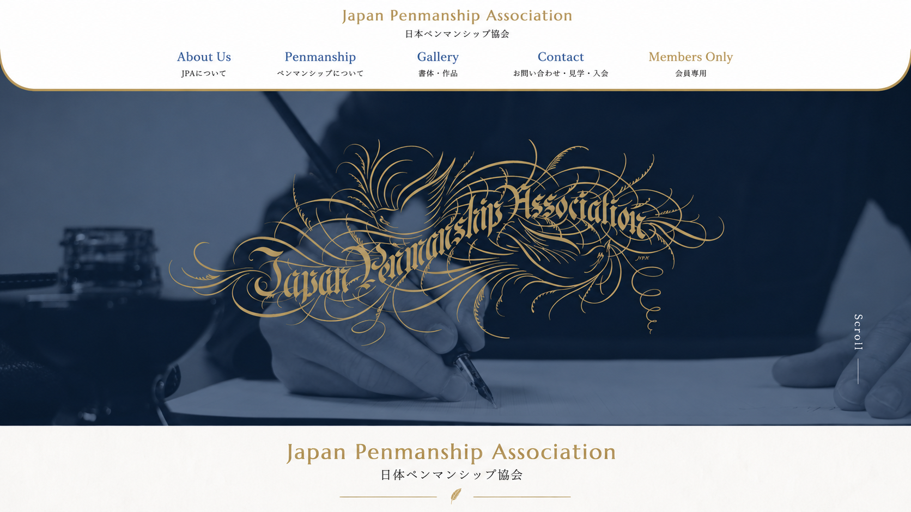
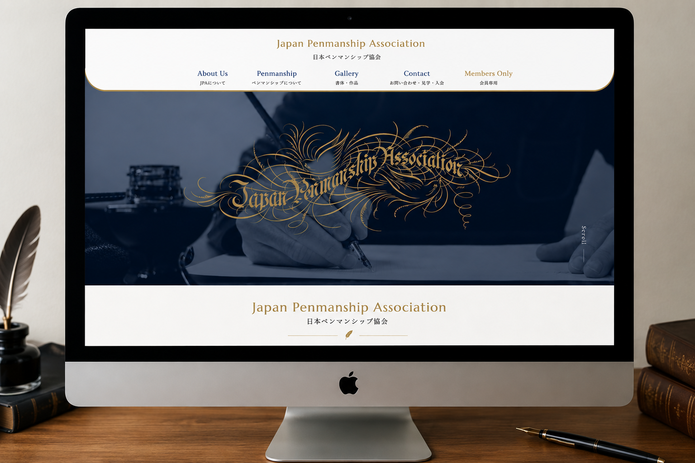
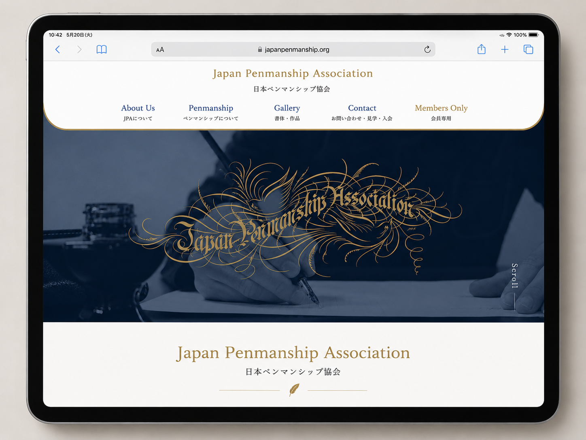
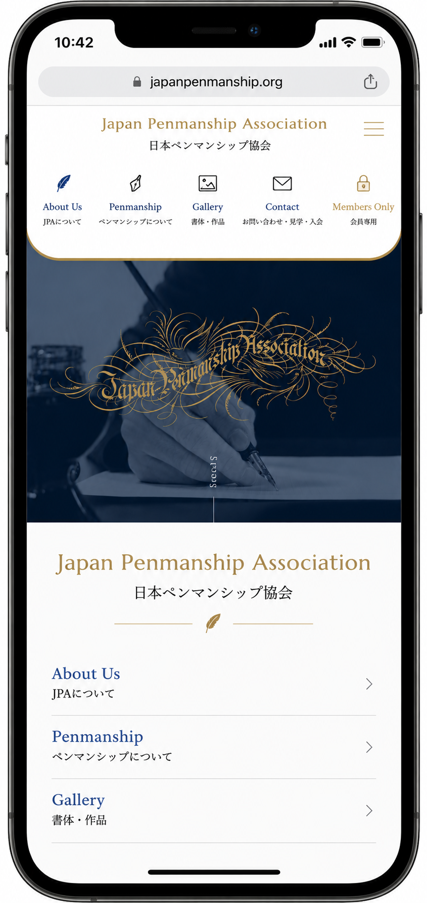

Web Production Report ｜ Front-end
コーポレートサイト 制作レポート
課題整理・情報設計・画面設計・デザイン調整・実装・検証まで一貫して担当
実際に公開・運用されているWebサイトです
Project Overview
英字の書法・装飾文字のアート「ペンマンシップ」の普及活動を行う団体、日本ペンマンシップ協会の公式サイトです。全13ページのコーポレートサイトで、現在も実際に公開・運用されています。課題整理から検証・公開まで一貫して担当しました。
企画から公開まで、上記6工程（合計 約15日）を一人で担当しました。
Scope & Schedule
担当した範囲
担当外（協会側）
デザインの方針・原稿・写真は協会側の素材をもとに、画面設計から実装・検証・公開までを一人で担当しました。素材を「どう配置し、どう動かし、どの端末でも崩さないか」を設計・実装する役割です。
工程ごとの制作期間
課題整理
1日
情報設計
2日
画面設計
1日
デザイン調整
2日
実装
7日
検証
2日
合計
15日
Step ① ・ Problem Definition
ペンマンシップは日本では認知の低い専門分野です。協会には「活動を知ってもらい、見学・入会につなげる場」が必要でした。まず、誰に何を届けるサイトなのかを整理することから始めました。
前提知識のない訪問者でも読み進められるよう、情報を段階的に見せる必要がある。
特徴の異なる書体を、迷わせず・比較しやすく見せる構成が必要。
どのページからでも問い合わせへたどり着ける回遊性が必要。
PC閲覧を中心に想定しつつ、スマホでもレイアウトを破綻させない。
初めてペンマンシップに触れる人にも魅力が伝わり、迷わず情報へたどり着き、最終的に「見学・入会」という行動につながるサイトをつくること。
Constraints
実案件として、以下の制約を踏まえて設計・実装しました。制約を前提に「何を優先するか」を判断しています。
Constraint 01
公開後は協会側が情報を更新します。そのため共通パーツの一元管理・テンプレート化を重視し、更新時に崩れにくい構成にしました。
Constraint 02
閲覧の中心は PC と想定。PCを基準に設計しつつ、スマホ・タブレットでも破綻しないレスポンシブ対応を行いました。
Constraint 03
協会のデザイン方針・素材が前提。ゼロからデザインを起こすのではなく、方針を各端末で崩れないUIへ落とし込む役割に徹しました。
Constraint 04
ペンマンシップは専門性が高く前提知識が必要。情報を段階的に提示し、ナビに日本語補足を添えて、初見でも迷わない構成にしました。
Step ② ・ Information Architecture
サイトマップ
TOP（index）Penmanship 配下に 6 書体の詳細ページを配置。
Information Structure ／ Before → After
課題整理で見えた「情報が多く・散らばりやすい」状態を、情報設計で4テーマの目次型へ整理しました。
改善前：情報が散在
ページや情報が並列に存在し、訪問者がどこから見ればよいか分かりにくい状態。専門用語も多く、離脱しやすい。
改善後：4テーマの目次型
トップを目次と位置づけ、4テーマ（About / Penmanship / Gallery / Contact）へカード型に分岐。初見でも全体像をひと目で把握できる。
User Flow & Page Transition
情報設計で決めた導線を、ユーザーの動き（ユーザーフロー）と画面のつながり（画面遷移）の2つの図で整理しました。
画面遷移図
Step ③ ・ Screen Design ／ Wireframe
情報設計で決めた「目次型トップ・複数導線・段階的な情報提示」を、画面のどこに何を置くかへ落とし込みました。実装前に、PC を基準に Tablet・SP での崩し方まで設計しています。
PC1025px〜
TABLET768–1024px
SP〜500px
| 項目 | PC（1025px〜） | Tablet（768–1024px） | SP（〜500px） |
|---|---|---|---|
| レイアウト | 2〜3カラム中心 | 一部を1カラム化 | 縦1カラムに集約 |
| ナビゲーション | 横並び表示 | 横並び（余白を調整） | ハンバーガーで開閉 |
| スライダー | 3枚表示 | 2枚表示 | 1枚表示 |
Step ③ ・ Screen Design ／ Rationale
各レイアウトは見た目の好みではなく、情報設計で決めたことを画面に反映した結果です。「どんな情報を・どの順で見せるか」を「どこに・どう配置するか」へつなげています。
Step ④ ・ Design Adjustment
※ デザイン方針・原稿・写真は協会側の素材をもとに、各端末で崩れないようUIへ落とし込む調整を担当した。

Step ⑤ ・ Implementation ／ Tech Selection
使用した技術を「なぜ採用したか」とあわせて整理しました。保守と運用を前提に選定しています。
見出し階層や header/nav/section を適切に使い、構造が読み取りやすく・SEO/アクセシビリティにも有利な土台にするため。
全13ページで見た目を統一し、修正を一箇所で済ませるため。共通スタイルは reset.css ＋ common.css に集約し、命名で要素の対応関係を明確にした。
スライダー（slick）・アコーディオンなど既存プラグインの資産を活かし、短い工期で安定した挙動を実現するため。詳細は下記。
Step ⑤ ・ Implementation ／ Code
共通ヘッダーの実装例Block__Element で対応関係が一目で分かる命名にする
<!-- HTML : ブロック header の中に要素を入れ子で命名 --> <header class="header"> <nav class="header__nav"> <a class="header__item header__link">About Us</a> <a class="header__item header__link">Gallery</a> </nav> </header>
/* CSS : header（Block）__nav / __link（Element）*/ .header__nav { display: flex; gap: 24px; } .header__item { list-style: none; } .header__link { color: var(--navy); transition: .2s; } .header__link:hover { color: var(--gold); }
.header__nav / .header__item / .header__link のように Block__Element で書くことで、クラス名を見ただけで「どのブロックの何か」が分かり、HTMLとCSSの対応を追いやすくなります。
ヘッダー・フッター・ボタンなど共通の部品は common.css に集約。各ページは呼び出すだけにすることで、13ページ分の修正を1箇所で完結でき、表記ゆれや直し漏れを防げます。
Implementation Result ／ Devices
ワイヤーフレームで設計したレイアウトを、実際の各端末で表示した結果です（実サイトのスクリーンショット）。



PC
1025px 以上
Tablet
768〜1024px
SP
500px 以下
Step ⑥ ・ Verification
Chrome・Safari・スマートフォン・タブレットで確認し、見つけた不具合を「原因まで特定して修正」しました。
▲ 不具合
iPhone Safari でファーストビューが画面より大きく、下が見切れた。
原因
Safari の動的ツールバーで 100vh が実表示領域より大きく計算されていた。
● 修正
高さの指定を見直し、実際の表示領域に合わせて調整。
✓ 結果
iPhone Safari でファーストビューが正しく収まった。
▲ 不具合
タブレットで Gallery の画像がカラム幅からはみ出した。
原因
画像に max-width 指定が無く、元サイズで表示されていた。
● 修正
画像を max-width:100% にしてカラム幅に追従させた。
✓ 結果
はみ出しと横スクロールを解消した。
▲ 不具合
iPad でグローバルナビの余白が詰まり窮屈だった。
原因
768〜1024px の中間幅にブレークポイントが無かった。
● 修正
中間幅にBPを追加し、ナビの余白を再調整。
✓ 結果
タブレットでの窮屈さを解消した。
▲ 不具合
スマホでハンバーガー展開中に背景がスクロールした。
原因
展開時に body 側のスクロールを止めていなかった。
● 修正
展開中は body のスクロールを固定する処理を追加。
✓ 結果
意図しない背景スクロールを防いだ。
Performance ／ Lighthouse
Chrome DevTools の Lighthouse による計測結果です。各項目で意識した改善点を下にまとめています。
Performance
Accessibility
Best Practices
SEO
※ スコアは計測時の値です。再計測時は最新の数値に差し替えてください。
Accessibility
「誰でも使えるサイト」を意識し、最低限のアクセシビリティ対応を行いました。今後さらに高い基準で対応していきたい領域です。
alt を設定し、読み上げ環境でも情報が伝わるようにした。alt を空にし、不要な読み上げを避けた。Improvement Proposal
公開後も継続して改善したい点を、課題 → 改善施策 → 期待効果で整理し、優先度 A（高）〜C（低）をつけました。
課題
画像が108点と多く、初回表示が遅くなりやすい。
改善施策
画像のWebP化・遅延読み込みを導入する。
期待効果
表示速度の改善と離脱の低減。
課題
jQuery のスクロール監視が処理として重い。
改善施策
フェードイン等を IntersectionObserver へ置き換える。
期待効果
スクロール処理の軽量化と保守性の向上。
課題
アクセシビリティをより高い基準で対応したい。
改善施策
フォーカス表示・ランドマーク・ARIAを整備する。
期待効果
利用できるユーザーの幅をさらに広げる。
課題
フォームの入力フィードバックが弱い。
改善施策
入力チェック・送信時の状態表示を追加する。
期待効果
入力ミスの減少と入力完了率の向上。
Summary ／ Next Time
この案件を振り返り、次に同じような案件を担当する場合に取り組みたいことを整理しました。
実際に公開・運用中のサイトです